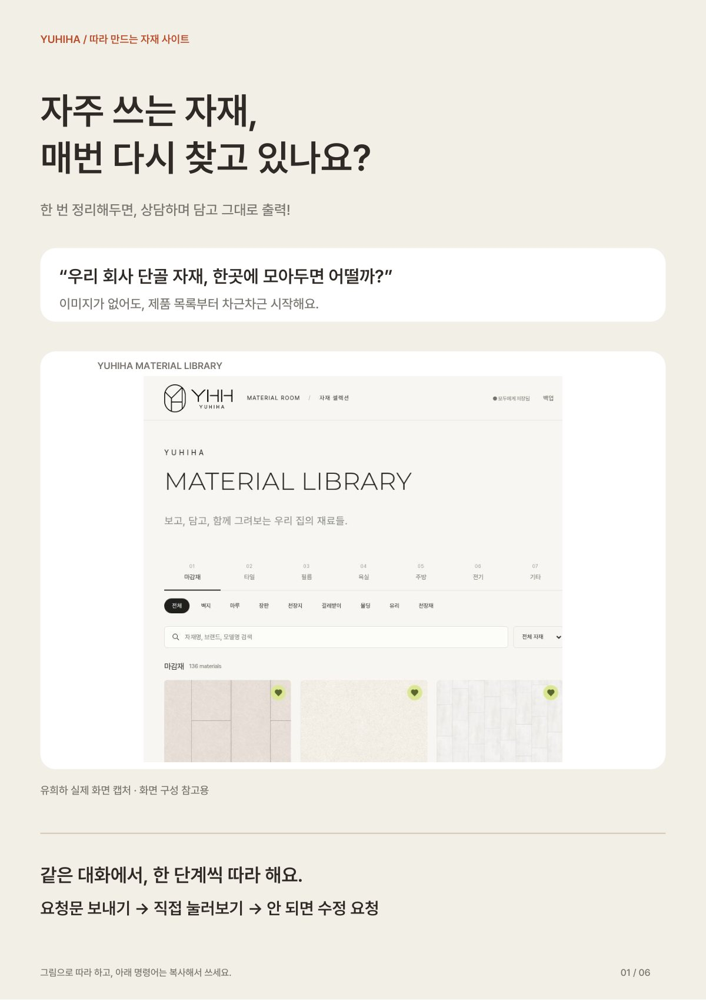
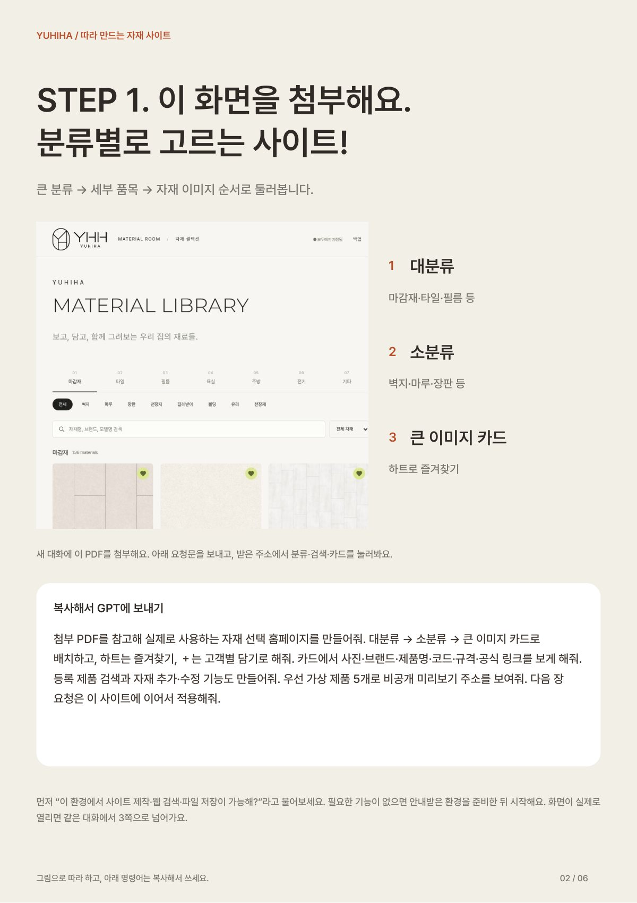
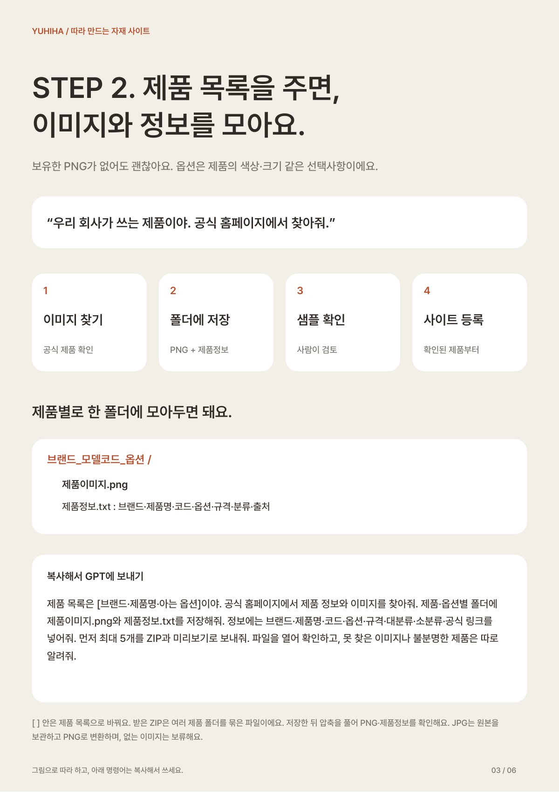
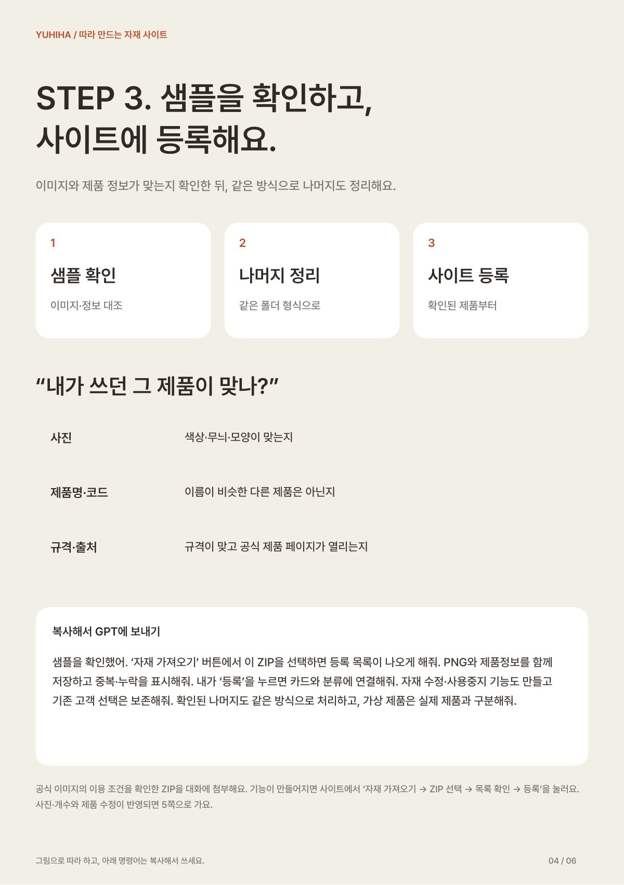
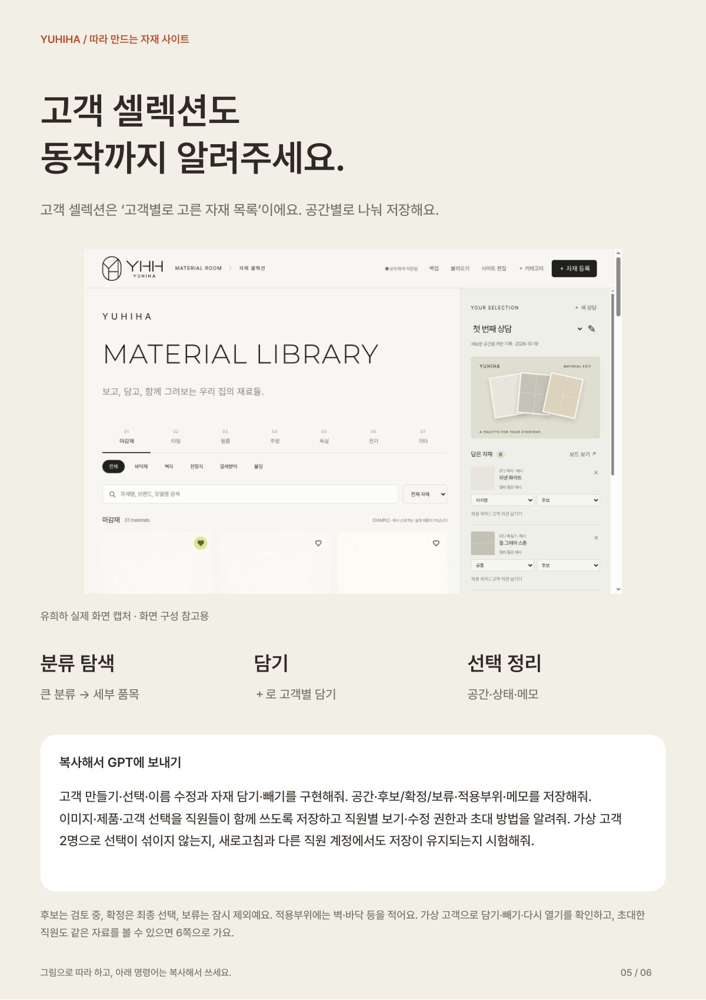
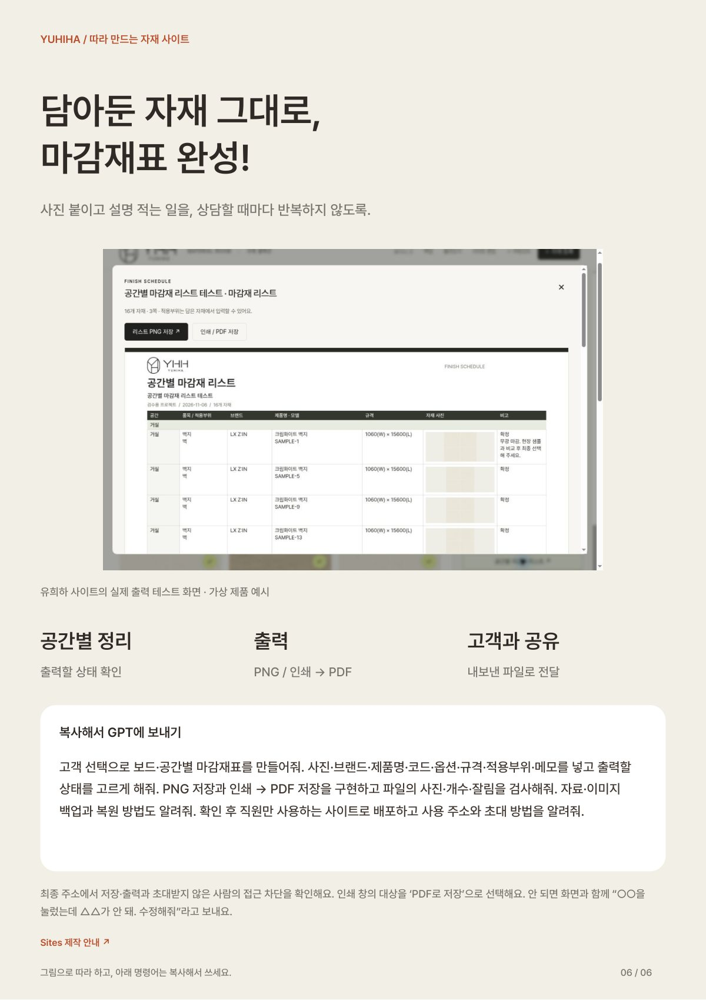

YUHIHA / MATERIAL SITE초보자 전용
초보자 전용
자재 홈페이지 만드는 프롬프트
자주 쓰는 자재를 한곳에 모아 두고, 상담하면서 고객별로 담고, 마감재표로 바로 출력하는 홈페이지예요. 코딩 몰라도 프롬프트를 복사해서 GPT에 붙여 넣기만 하면 돼요. 저희가 직접 돌려서 실행되는 것까지 확인했어요.
프롬프트 PDF 받기6쪽 · 0.9MBPDF로 받아 두세요. 2쪽에서 이 PDF를 GPT 대화에 그대로 첨부해서 시작해요. 아래 미리보기로 먼저 훑어보셔도 돼요.
곧 공개: 유희하 루비 스케치업에서 바로 쓰는 유희하 루비도 곧 공개할게요. @yuhiha_designers를 팔로우해 두시면 공개될 때 가장 먼저 받아 보실 수 있어요.
01들어 있는 것
- 사이트 뼈대 만들기 — 대분류 → 소분류 → 큰 이미지 카드, 하트 즐겨찾기
- 제품 이미지·정보 모으기 — 제품 목록만 주면 공식 홈페이지에서 찾아 폴더로 정리
- 샘플 확인하고 등록 — 맞는 제품인지 대조한 뒤 사이트에 올리기
- 고객 셀렉션 — 고객별·공간별로 담고 후보·확정·보류 표시
- 마감재표 출력 — 담아 둔 자재로 보드·마감재표를 PNG·PDF로
단계마다 GPT에 그대로 붙여 넣을 프롬프트가 들어 있어요. 사이트 제작 기능이 있는 ChatGPT 환경에서 따라 해 주세요.
00이용 조건
- 개인 공부와 실무에 자유롭게 참고하실 수 있어요.
- PDF를 다른 곳에 올리거나 재배포·판매할 수 없어요.
- 강의·교육 자료로 쓰시려면 먼저 @yuhiha_designers로 연락 주세요.
주변에 알려 주고 싶으시면 파일 대신 인스타 게시물을 공유해 주세요 🙏
02프롬프트 미리보기6쪽





